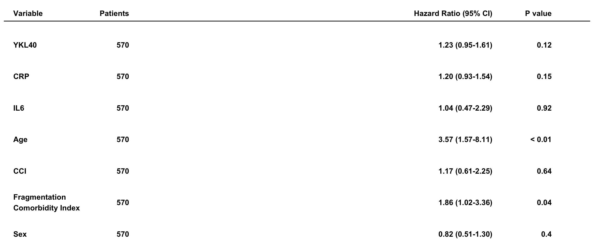

Last updated: 2026-01-11
Checks: 7 0
Knit directory: Annapragada2025/
This reproducible R Markdown analysis was created with workflowr (version 1.7.1). The Checks tab describes the reproducibility checks that were applied when the results were created. The Past versions tab lists the development history.
Great! Since the R Markdown file has been committed to the Git repository, you know the exact version of the code that produced these results.
Great job! The global environment was empty. Objects defined in the global environment can affect the analysis in your R Markdown file in unknown ways. For reproduciblity it’s best to always run the code in an empty environment.
The command set.seed(20251119) was run prior to running
the code in the R Markdown file. Setting a seed ensures that any results
that rely on randomness, e.g. subsampling or permutations, are
reproducible.
Great job! Recording the operating system, R version, and package versions is critical for reproducibility.
Nice! There were no cached chunks for this analysis, so you can be confident that you successfully produced the results during this run.
Great job! Using relative paths to the files within your workflowr project makes it easier to run your code on other machines.
Great! You are using Git for version control. Tracking code development and connecting the code version to the results is critical for reproducibility.
The results in this page were generated with repository version 1073f80. See the Past versions tab to see a history of the changes made to the R Markdown and HTML files.
Note that you need to be careful to ensure that all relevant files for
the analysis have been committed to Git prior to generating the results
(you can use wflow_publish or
wflow_git_commit). workflowr only checks the R Markdown
file, but you know if there are other scripts or data files that it
depends on. Below is the status of the Git repository when the results
were generated:
Ignored files:
Ignored: .DS_Store
Ignored: analysis/.Rhistory
Ignored: data/.DS_Store
Ignored: output/useful.stuff.aa/raw-data/
Untracked files:
Untracked: data/MICA_variable_bins.csv
Unstaged changes:
Modified: analysis/Fig2A_6A_S_5A_21.Rmd
Modified: analysis/Fig5_A.Rmd
Modified: analysis/Fig5_B.Rmd
Modified: analysis/Fig6_B.Rmd
Modified: data/circos_fragmentation.csv
Deleted: data/longbins_mica_processed.csv
Modified: output/cohort_create.r
Note that any generated files, e.g. HTML, png, CSS, etc., are not included in this status report because it is ok for generated content to have uncommitted changes.
These are the previous versions of the repository in which changes were
made to the R Markdown (analysis/Fig6_D.Rmd) and HTML
(docs/Fig6_D.html) files. If you’ve configured a remote Git
repository (see ?wflow_git_remote), click on the hyperlinks
in the table below to view the files as they were in that past version.
| File | Version | Author | Date | Message |
|---|---|---|---|---|
| html | 1073f80 | shay-279 | 2026-01-09 | re-ran just for fun before zenodo upload |
| Rmd | ad5f281 | shay-279 | 2025-11-19 | push stuff |
| html | ad5f281 | shay-279 | 2025-11-19 | push stuff |
Describe your project.
library(plyr)
library(dplyr)
Attaching package: 'dplyr'The following objects are masked from 'package:plyr':
arrange, count, desc, failwith, id, mutate, rename, summarise,
summarizeThe following objects are masked from 'package:stats':
filter, lagThe following objects are masked from 'package:base':
intersect, setdiff, setequal, unionlibrary(devtools)Loading required package: usethislibrary(tidyverse)── Attaching core tidyverse packages ──────────────────────── tidyverse 2.0.0 ──
✔ forcats 1.0.0 ✔ readr 2.1.5
✔ ggplot2 3.5.1 ✔ stringr 1.5.1
✔ lubridate 1.9.4 ✔ tibble 3.2.1
✔ purrr 1.0.4 ✔ tidyr 1.3.1── Conflicts ────────────────────────────────────────── tidyverse_conflicts() ──
✖ dplyr::arrange() masks plyr::arrange()
✖ purrr::compact() masks plyr::compact()
✖ dplyr::count() masks plyr::count()
✖ dplyr::desc() masks plyr::desc()
✖ dplyr::failwith() masks plyr::failwith()
✖ dplyr::filter() masks stats::filter()
✖ dplyr::id() masks plyr::id()
✖ dplyr::lag() masks stats::lag()
✖ dplyr::mutate() masks plyr::mutate()
✖ dplyr::rename() masks plyr::rename()
✖ dplyr::summarise() masks plyr::summarise()
✖ dplyr::summarize() masks plyr::summarize()
ℹ Use the conflicted package (<http://conflicted.r-lib.org/>) to force all conflicts to become errorslibrary(data.table)
Attaching package: 'data.table'
The following objects are masked from 'package:lubridate':
hour, isoweek, mday, minute, month, quarter, second, wday, week,
yday, year
The following object is masked from 'package:purrr':
transpose
The following objects are masked from 'package:dplyr':
between, first, lastlibrary(here)here() starts at /Users/akshayaannapragada/Dropbox/ScannedNotes/VelculescuLab/Cancer Genomics Lab/Projects/Not cancer fragmentome/Manuscript/Final Github Repos for Publications/Annapragada2025
Attaching package: 'here'
The following object is masked from 'package:plyr':
herelibrary(readxl)
library(ggpubr)
Attaching package: 'ggpubr'
The following object is masked from 'package:plyr':
mutatelibrary(ggrepel)
library(caret)Loading required package: lattice
Attaching package: 'caret'
The following object is masked from 'package:purrr':
liftlibrary(glmnet)Loading required package: Matrix
Attaching package: 'Matrix'
The following objects are masked from 'package:tidyr':
expand, pack, unpack
Loaded glmnet 4.1-8library(recipes)
Attaching package: 'recipes'
The following object is masked from 'package:Matrix':
update
The following object is masked from 'package:stringr':
fixed
The following object is masked from 'package:devtools':
check
The following object is masked from 'package:stats':
steplibrary(devtools)
Attaching package: 'survival'The following object is masked from 'package:caret':
cluster
Attaching package: 'survminer'The following object is masked from 'package:survival':
myelomaggbreak v0.1.4 Learn more at https://yulab-smu.top/If you use ggbreak in published research, please cite the following
paper:
S Xu, M Chen, T Feng, L Zhan, L Zhou, G Yu. Use ggbreak to effectively
utilize plotting space to deal with large datasets and outliers.
Frontiers in Genetics. 2021, 12:774846. doi: 10.3389/fgene.2021.774846library(tidyverse)
library(patchwork)
# find the data type of variable(s) used to train the model
get_data_type <- function(train_data, coxph_mf, sel_col_name=NULL) {
col_names <- names(train_data)
data_classes <- attr(terms(coxph_mf), "dataClasses")
# which variables in the data were used to train the model?
col_hits <- match(col_names, names(data_classes))
col_hits <- col_hits[!is.na(col_hits)]
# reverse of the operation above - to create the HR table with the same sequence of variables as in the cox model
ord_col_hits <- match(names(data_classes), col_names)
ord_col_names <- names(data_classes)[!is.na(ord_col_hits)]
# return the data type or recursively find the data type of all the variables used in the model
if(!is.null(sel_col_name)) {
if(sel_col_name %in% names(data_classes[col_hits])) return(data_classes[[sel_col_name]]) else stop("Selected column name is not present in the model object!")
} else {
sapply(ord_col_names, function(x) get_data_type(train_data, coxph_mf, x))
}
}
# find the number of levels for data type of variable
# <!> the number of levels are based on the data and not the model, so ensure that you are using the data that is used to train the model
get_nlevels <- function(train_data, coxph_mf, sel_col_name=NULL) {
if(!is.null(sel_col_name)) {
col_data_type <- get_data_type(train_data, coxph_mf, sel_col_name)
# assign/compute the number of levels depending on the data type
switch(col_data_type,
"numeric" = 1,
"logical" = 2,
"character" = length(unique(train_data[[sel_col_name]])),
"factor" = length(levels(train_data[[sel_col_name]])))
} else {
# this step is wasteful, but meh!
all_col_data_type <- get_data_type(train_data, coxph_mf)
# find the number of levels for all the variables used in the model
sapply(names(all_col_data_type), function(x) get_nlevels(train_data, coxph_mf, x))
}
}
# extract the HR, conf intervals and p-value for variable(s)
get_hr_tbl <- function(train_data, coxph_mf, sel_col_name=NULL, status="death") {
# cox ph object coefficients and confidence intervals
summary_tbl <- summary(coxph_mf)$conf.int
coef_tbl <- summary(coxph_mf)$coefficients
# if only extracting the information for the selected variable
# else extract the information for all the variables
if(!is.null(sel_col_name)) {
# counting events and totals
col_data_type <- get_data_type(train_data, coxph_mf, sel_col_name)
col_nlevels <- get_nlevels(train_data, coxph_mf, sel_col_name)
if(col_nlevels > 1) {
# for logical, character or factor data type
nevent_tbl <- table(train_data[train_data[[status]] == 1, sel_col_name])
ntotal_tbl <- table(train_data[[sel_col_name]])
} else {
# for numeric data type
nevent_tbl <- table(ifelse(train_data[[status]] == 1, sel_col_name, NA))
ntotal_tbl <- table(ifelse(!is.na(train_data[[status]]), sel_col_name, NA))
}
# initializing the HR, confidence intervals, pvalues
HRvec <- rep(1,col_nlevels)
HRlowvec <- rep(NA,col_nlevels)
HRhigvec <- rep(NA,col_nlevels)
pvaluevec <- rep(NA,col_nlevels)
neventvec <- rep(NA,col_nlevels)
ntotalvec <- rep(NA,col_nlevels)
# suffices for levels
suffix_nlevels <- switch(col_data_type,
"numeric" = "",
"logical" = c("FALSE", "TRUE"),
"character" = unique(train_data[[sel_col_name]]),
"factor" = levels(train_data[[sel_col_name]]))
# extracting values from the cox ph object
for (i_num in seq_along(suffix_nlevels)) {
i <- suffix_nlevels[i_num]
i_full <- paste0(sel_col_name, i) # rownames used in the summary table of cox model
# for each level, fill the HR, interval and p-value
if(paste0(sel_col_name, i) %in% rownames(summary_tbl)) {
HRvec[i_num] <- summary_tbl[i_full,1]
HRlowvec[i_num] <- summary_tbl[i_full,3]
HRhigvec[i_num] <- summary_tbl[i_full,4]
pvaluevec[i_num] <- coef_tbl[i_full,5]
}
# if logical, character or factor, use the suffix
# else use the variable name
# or keep it as 0
if(i %in% names(ntotal_tbl)) {
neventvec[i_num] <- nevent_tbl[i]
ntotalvec[i_num] <- ntotal_tbl[i]
} else if(i_full %in% names(ntotal_tbl)) {
neventvec[i_num] <- nevent_tbl[i_full]
ntotalvec[i_num] <- ntotal_tbl[i_full]
} else {
neventvec[i_num] <- 0
ntotalvec[i_num] <- 0
}
}
# adding a header row
HRvec <- c(NA, HRvec)
HRlowvec <- c(NA, HRlowvec)
HRhigvec <- c(NA, HRhigvec)
pvaluevec <- c(NA, pvaluevec)
neventvec <- c(NA, neventvec)
ntotalvec <- c(NA, ntotalvec)
suffix_nlevels <- c("", suffix_nlevels)
# createing a table for selected variable
tbl_row <- tibble(var = paste0(sel_col_name, suffix_nlevels),
HR = HRvec,
HRlow = HRlowvec,
HRhig = HRhigvec,
pvalue = pvaluevec,
nevent = neventvec,
ntotal = ntotalvec)
} else {
all_col_nlevels <- get_nlevels(train_data, coxph_mf)
lapply(names(all_col_nlevels), function(x) get_hr_tbl(train_data, coxph_mf, x, status)) %>% bind_rows()
}
}
# add 0 to the right
r_pad <- function(x, n) sprintf(paste0("%.", n, "f"), round(x, n))
# make the forest plot
plot_hr <- function(hr_tbl, file_name = "coxph_table.png", var_labels=NULL, xlim=NULL, xticks_rotate=FALSE, scientific=FALSE, fraction=FALSE, fig_height = 7) {
# find the title rows and fix shape of the point and interval
title_row <- which(is.na(hr_tbl$ntotal))
print(title_row)
hr_tbl$shape <- 15
hr_tbl$se <- 1
hr_tbl$shape[title_row] <- NA
hr_tbl$se[title_row] <- 0
if(is.null(var_labels)) var_labels <- hr_tbl$var # keep the var names as is if nothing is provided
# adding a heading row to the table - this table will be used to make the intervals plot and put "in" between the actual table
hr_tbl_in <- hr_tbl %>%
add_row(var = NA, HR = NA, HRlow = NA, HRhig = NA, pvalue = NA, nevent = NA, ntotal = NA, shape = NA, se = NA, .before=1)
# clean up the headings and reorganize the table for printing
hr_tbl_disp <- hr_tbl %>%
mutate(var = var_labels,
#events_total = paste(nevent, ntotal, sep="/"),
events_total = ntotal,
hru = ifelse(is.na(HR), "", ifelse(is.na(HRlow), HR, paste0(r_pad(HR,2), " (", r_pad(HRlow,2),"-",r_pad(HRhig,2),")"))),
pvalue = ifelse(is.na(pvalue), "", ifelse(pvalue < 0.01, "< 0.01", round(pvalue, 2))),
events_total = ifelse(row_number() %in% title_row, "", events_total)) %>%
select(var, events_total, hru, pvalue) %>%
rename(Subgroup = var,
#`Events/Patients` = events_total,
`Patients` = events_total,
`Hazard Ratio (95% CI)` = hru,
`P value` = pvalue)
# adding a heading row to the table for display
hr_tbl_lr <- hr_tbl_disp %>%
add_row(Subgroup = "Variable",
# `Events/Patients` = "Events/Patients",
`Patients` = "Patients",
`Hazard Ratio (95% CI)` = "Hazard Ratio (95% CI)",
`P value` = "P value", .before= 1) %>%
mutate(row_order = row_number(),
row_order = factor(row_order, levels = rev(row_order)))
# defining margins - no method here - just trial and error
pos1 <- 0; mar1 <- pos1-0.1
pos2 <- 4; mar2 <- pos2+0.5
pos3 <- 2; mar3 <- pos3-3.0
pos4 <- 4; mar4 <- pos4+1.0
# overwrite title_row as a new row has been added
title_row <- which(is.na(hr_tbl_in$ntotal))
title_row<-c(1,3,5,7,9,11,13,15)
# keep variable names and events / patients on the left side
fig_left <- ggplot(data = hr_tbl_lr)+
geom_text(aes(x = pos1, y = row_order, label = Subgroup,
fontface = ifelse(row_order %in% title_row, "bold", "plain")), hjust=0)+
#geom_text(aes(x = pos2, y = row_order, label = `Events/Patients`,
geom_text(aes(x = pos2, y = row_order, label = `Patients`,
fontface = ifelse(row_order %in% title_row, "bold", "plain")), hjust=1)+
theme_void()+
coord_cartesian(xlim = c(mar1, mar2))
# keep hazard ratios and p-value on the right side
fig_right <- ggplot(data = hr_tbl_lr)+
geom_text(aes(x = pos3, y = row_order, label = `Hazard Ratio (95% CI)`,
fontface = ifelse(row_order %in% title_row, "bold", "plain")), hjust=1)+
geom_text(aes(x = pos4, y = row_order, label = `P value`,
fontface = ifelse(row_order %in% title_row, "bold", "plain")), hjust=1)+
theme_void()+
coord_cartesian(xlim = c(mar3, mar4))
# keeping the HR table in the middle
if(is.null(xlim)) {
xmin <- round(log(min(hr_tbl_in$HRlow, na.rm=TRUE))/log(2))
xmax <- round(log(max(hr_tbl_in$HRhig, na.rm=TRUE))/log(2))
xlim <- c(xmin, xmax)
xrange <- pretty(c(xmin, xmax))
} else {
xrange <- pretty(c(xlim[1], xlim[2]))
}
# forest plot
fig <- hr_tbl_in %>%
mutate(var_num = row_number(),
var_num = factor(var_num, levels = rev(var_num)),
se = as.character(se),
log_HR = log(HR)/log(2),
log_HRlow = log(HRlow)/log(2),
log_HRhig = log(HRhig)/log(2)) %>%
replace_na(list(HR=0, HRlow=0, HRhig=0)) %>%
ggplot(aes(x = log_HR, y = var_num))+
geom_point(aes(shape=shape))+
geom_errorbar(aes(xmin = log_HRlow, xmax = log_HRhig, linetype=se, width=0.2))+
scale_linetype_manual(breaks = c("0","1"), values = c("blank", "solid"))+
geom_vline(xintercept = 0, linetype="dotted")+
scale_shape_identity()
# if the range is too long, use the scientific notation - works well with text rotation
#if(!scientific | fraction) {
# if(fraction) {
# labels_xrange <- c()
# for(xunit in xrange) {
# if(xunit < 0) {
# labels_xrange <- c(labels_xrange, frac_str(1, 2^(-xunit)))
# } else if(xunit == 0) {
# labels_xrange <- c(labels_xrange, 1)
# } else {
# labels_xrange <- c(labels_xrange, 2^xunit)
# }
# }
# } else {
# labels_xrange <- 2^xrange
# }
# fig <- fig+
# scale_x_continuous(breaks = xrange, labels = labels_xrange)
#} else {
# fig <- fig+
#scale_x_continuous(breaks = xrange, labels = format(2^xrange, scientific=TRUE, digits=2))
#}
# remove legend and apply x-axis limits
fig <- fig+
coord_cartesian(xlim = xlim)+
labs(x="", y="")+
theme_classic()+
theme(legend.position="none",
axis.line.y= element_blank(),
axis.title.y = element_blank(),
axis.text.y = element_blank(),
axis.ticks.y = element_blank())
if(xticks_rotate) fig <- fig+theme(axis.text.x = element_text(angle = 90, vjust = 0.5, hjust=1))
# arrange the different panels
layout <- c(
area(t=0, b=7, l=0, r=3), # left of forest plot
#area(t=0, b=7, l=4, r=8), # forest plot
area(t=0, b=7, l=9, r=12), # right of forest plot
area(t=0, b=7, l=0, r=12) # to make a line after the heading
)
# to plot a line under the title row
line_pos <- mean(as.numeric(hr_tbl_in %>%
mutate(var_num = row_number(),
var_num = factor(var_num, levels = rev(var_num))) %>%
select(var_num) %>%
slice_head(n=2) %>%
pull(var_num)))
# plotting the title row
fig_title <- hr_tbl_in %>%
mutate(var_num = row_number(),
var_num = factor(var_num, levels = rev(var_num))) %>%
select(var_num) %>%
mutate(shape = NA) %>%
ggplot()+
geom_point(aes(x = shape, y = var_num, shape = shape))+
scale_shape_identity()+
geom_hline(yintercept = line_pos)+
theme_void()
# final plot arrangement
#intg_fig <- fig_left+fig+fig_right+fig_title+plot_layout(design = layout)
intg_fig <- fig_left+fig_right+fig_title+plot_layout(design = layout)
#if(dirname(file_name) == ".") {
# dir.create("results")
# ggsave(file.path("results", paste0(file_name, ".png")), intg_fig, height = fig_height, width = 12)
# there must be a better way, but NP
#} else {
# ggsave(paste0(file_name, ".png"), intg_fig, height = fig_height, width = 12)
#}
#invisible(intg_fig)
intg_fig
}
# To create a vertical fraction
frac_str <- function(x,y) {
parse(text = paste0("frac(", x, ",", y, ")"))
}[1] 1 3 5 7 9 11 13Warning: Removed 15 rows containing missing values or values outside the scale range
(`geom_point()`).
| Version | Author | Date |
|---|---|---|
| ad5f281 | shay-279 | 2025-11-19 |
sessionInfo()R version 4.4.1 (2024-06-14)
Platform: aarch64-apple-darwin20
Running under: macOS 15.6
Matrix products: default
BLAS: /Library/Frameworks/R.framework/Versions/4.4-arm64/Resources/lib/libRblas.0.dylib
LAPACK: /Library/Frameworks/R.framework/Versions/4.4-arm64/Resources/lib/libRlapack.dylib; LAPACK version 3.12.0
locale:
[1] en_US.UTF-8/en_US.UTF-8/en_US.UTF-8/C/en_US.UTF-8/en_US.UTF-8
time zone: America/New_York
tzcode source: internal
attached base packages:
[1] stats graphics grDevices utils datasets methods base
other attached packages:
[1] patchwork_1.3.0 ggbreak_0.1.4 survminer_0.5.0 survival_3.8-3
[5] recipes_1.1.1 glmnet_4.1-8 Matrix_1.7-3 caret_7.0-1
[9] lattice_0.22-6 ggrepel_0.9.6 ggpubr_0.6.0 readxl_1.4.5
[13] here_1.0.1 data.table_1.17.0 lubridate_1.9.4 forcats_1.0.0
[17] stringr_1.5.1 purrr_1.0.4 readr_2.1.5 tidyr_1.3.1
[21] tibble_3.2.1 ggplot2_3.5.1 tidyverse_2.0.0 devtools_2.4.5
[25] usethis_3.1.0 dplyr_1.1.4 plyr_1.8.9 workflowr_1.7.1
loaded via a namespace (and not attached):
[1] rstudioapi_0.17.1 jsonlite_1.9.1 shape_1.4.6.1
[4] magrittr_2.0.3 farver_2.1.2 rmarkdown_2.29
[7] fs_1.6.5 vctrs_0.6.5 memoise_2.0.1
[10] rstatix_0.7.2 htmltools_0.5.8.1 broom_1.0.7
[13] cellranger_1.1.0 gridGraphics_0.5-1 Formula_1.2-5
[16] pROC_1.18.5 sass_0.4.9 parallelly_1.42.0
[19] bslib_0.9.0 htmlwidgets_1.6.4 zoo_1.8-13
[22] cachem_1.1.0 whisker_0.4.1 mime_0.12
[25] lifecycle_1.0.4 iterators_1.0.14 pkgconfig_2.0.3
[28] R6_2.6.1 fastmap_1.2.0 future_1.34.0
[31] shiny_1.10.0 aplot_0.2.5 digest_0.6.37
[34] colorspace_2.1-1 ps_1.9.0 rprojroot_2.0.4
[37] pkgload_1.4.0 labeling_0.4.3 km.ci_0.5-6
[40] timechange_0.3.0 httr_1.4.7 abind_1.4-8
[43] compiler_4.4.1 remotes_2.5.0 withr_3.0.2
[46] backports_1.5.0 carData_3.0-5 pkgbuild_1.4.6
[49] ggsignif_0.6.4 MASS_7.3-65 lava_1.8.1
[52] sessioninfo_1.2.3 ModelMetrics_1.2.2.2 tools_4.4.1
[55] httpuv_1.6.15 future.apply_1.11.3 nnet_7.3-20
[58] glue_1.8.0 callr_3.7.6 nlme_3.1-167
[61] promises_1.3.2 grid_4.4.1 getPass_0.2-4
[64] reshape2_1.4.4 generics_0.1.3 gtable_0.3.6
[67] tzdb_0.4.0 KMsurv_0.1-5 class_7.3-23
[70] hms_1.1.3 car_3.1-3 foreach_1.5.2
[73] pillar_1.10.1 yulab.utils_0.2.0 later_1.4.1
[76] splines_4.4.1 tidyselect_1.2.1 miniUI_0.1.1.1
[79] knitr_1.49 git2r_0.35.0 gridExtra_2.3
[82] stats4_4.4.1 xfun_0.51 hardhat_1.4.1
[85] timeDate_4041.110 stringi_1.8.4 ggfun_0.1.8
[88] yaml_2.3.10 evaluate_1.0.3 codetools_0.2-20
[91] ggplotify_0.1.2 cli_3.6.4 rpart_4.1.24
[94] xtable_1.8-4 munsell_0.5.1 processx_3.8.6
[97] jquerylib_0.1.4 survMisc_0.5.6 Rcpp_1.0.14
[100] globals_0.16.3 parallel_4.4.1 ellipsis_0.3.2
[103] gower_1.0.2 profvis_0.4.0 urlchecker_1.0.1
[106] listenv_0.9.1 ipred_0.9-15 scales_1.3.0
[109] prodlim_2024.06.25 rlang_1.1.5